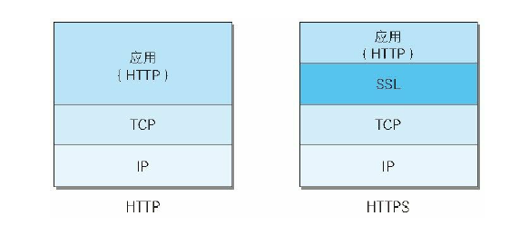
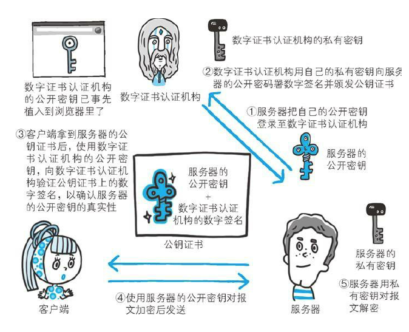
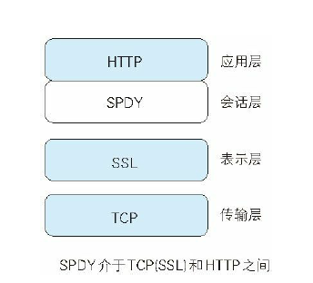
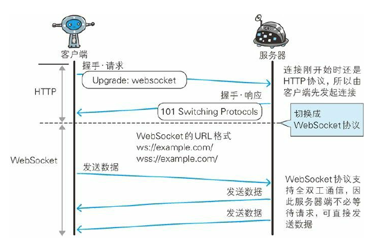

本文是我学习《图解HTTP》的记录，初步了解一下HTTP吧，有个大概印象。
了解Web及网络基础
TCP/IP协议族
网络设备之间的通信，基于相同的规则。
TCP/IP是各类协议族的总称。
TCP/IP的分层管理
协议族按层次分别分为以下4层：应用层，传输层，网络层，数据链路层。
- 应用层
决定了向用户提供应用服务时通信的活动。
预存了各类通用的应用服务。比如FTP（File Transfer Protocal)和DNS(Domain Name System).
HTTP协议也处于该层。 - 传输层
对上层应用层，提供处于网络连接中两台计算机之间的数据传输。
有两个不同的协议：TCP(Transmission Control Protocal, 传输控制协议)和UDP(User Data Protocol, 用户数据协议) - 网络层
用来处理在网络上流动的数据包。数据包是网路传输的最小单位，规定通过怎么样的路径到达对方计算机，并把数据包传送给对方。
与对方计算机之间通过多台网络设备进行传输时，网络层的作用就是在众多选项内选择一条传输路线。 - 链路层
处理连接网络的硬件部分。包括操作系统，硬件的设备驱动，NIC(网卡)，光纤等物理可见部分。
TCP/IP通信传输流
进行网络通信时，通过分层顺序与对方进行通信。__发送端从应用层往下走，接收端则往应用层往上走。
层与层传输数据没经过一层会被打打上该层所属信息，接收端再每一层一层去掉，称为封装。
与HTTP关系密切的协议：IP,TCP和DNS
负责传输的IP协议
IP协议位于网络层，作用就是幻想传送各种数据包，而确保传送需要满足各类条件，其中两个重要条件是IP地址和MAC地址(MEdia Access Control Address)。
IP地址指明节点被分配到的地址，MAC地址是指网卡所属的固定地址。
通信双方中转时会利用下一站中转设备的MAC地址来搜索下一个中转目标，此时采用ARP协议（Address Resolution Protocol)。
确保可靠性的TCP协议
TCP协议位于传输层，提供可靠的字节流服务(Byte Stream Service),为了更容易传达大数据才把数据分割，TCP能狗确认数据最终是否送达。
TCP的三次握手
握手过程中使用了TCP的标志—-SYN(synchronize)和ACK(acknowledgement)。
发送端发送一个带有SYN标志的数据包给对方，接收端收到后回传一个SYN/ACK标志的数据包传达确认信息，最后发送端再回传一个带ACK标志的数据包，代表握手结束。
负责域名解析的DNS服务
通过域名查找IP地址。
各种协议与HTTP协议的关系
URL和URI
URI是Uniform Resource Idetifier的缩写。
统一的格式，可标识的资源，可标识的对象。
URI是字符串标识某一互联网资源，而URL是资源的位置。
URI格式
绝对URI的格式：协议方案名-登录信息（可选）-服务器地址-服务器端口号（可选）-文件路径 -查询字符串（可选）-片段标识符（可选）
简单HTTP协议
通过请求和相应的交换达成通信
- 请求报文是由
请求方法，请求URI,协议版本，可选请求首部字段和内容实体构成。 - 接收请求的服务器，将请求内容处理结果以相应的形式返回,由
协议版本，状态码，原因短语，可选响应首部字段，资源实体构成。
HTTP是不保存状态的协议
如何保存用户的状态，引入了Cookie技术。
请求URI定位资源
如果不是访问特定资源而是对服务器本身发起请求，可以用*来代替请求URI.
- 对服务器本身发起请求？什么意思。
告知服务器意图的HTTP方法
GET：用来请求访问已被URI识别的资源。POST:传输实体的主体，POST主要目的并不是获取响应的主体内容。PUT:用来传输文件，要求在请求报文主体中包含文件内容，然后保存到请求URI指定的位置。HEAD:获得报文首部，和GET方法一样，只是不反悔报文主体部分。用域确认URI有效性及资源更新的日期时间。DELETE:用域删除文件，与PUT相反。OPTIONS:查询针对请求URI指定的资源支持的方法。TRACE:追踪路径，让Web服务器端将之前的请求通信环回给客户端的方法。CONNECT:要求用隧道协议连接代理，主要使用SSL（Secure Sockets Layer）和TLS(Transport Layer Security)协议把通信内容加密后经网络隧道传输。
持久连接节省通信量
只要任意一端没有明确提出断开连接，则保持TCP连接状态。
管线化，并行发送多个请求，无需等待一个个的响应。
使用Cookie的状态管理
Cookie会根据从服务器端发送的响应报文内的一个叫做Set-Cookie的首部字段信息，通知客户端保存Cookie。下次客户端再往该服务器发送请求时，客户端会自动在请求报文中加入Cookie值后发送出去。
HTTP报文内的HTTP信息
HTTP报文
HTTP报文由报文首部和报文主体组成。两者由空行划分，通常不一定要有报文主体。
请求报文及响应报文的结构
请求行/状态行-各种首部字段-空行-报文主体
编码提升传输速率
报文主体与实体主体的差异
- 报文(message)
是HTTP通信中的基本单位，有1Bytes组成，通过HTTP通信传输 - 实体(enity)
作为请求和响应的有效载荷数据被传输，内容有实体首部和实体主体组成。
压缩传输的内容编码
编码类型：
- Gzip
- compress
- deflate
- identify
分割发送的分块传输编码
传输大容量数据时，将主体分块让浏览器逐步显示。用十六进制标记块的大小，最后一块使用”0(CR+LF)“标记。
发送多种数据的多部份对象集合
获取部分内容的范围请求
网络中断，如何恢复而不用重头开始，实现该功能需要指定下载的实体范围。
内容协商返回最适合内容
机制是客户端与服务端就响应内容交涉，提供给客户端最为适合的资源。会以响应资源的语言，字符集，编码方式作为判断的基准。
有三种类型：服务器驱动，客户端驱动，透明驱动。
返回结果的HTTP状态码
状态码的告知从服务端返回的请求结果
服务端返回的状态码响应类型：
1XX Informational 接收的请求正在处理
2XX Success 请求正常处理完毕
3XX Redirection 需要进行附加操作以完成请求
4XX Ckient Error 服务器无法处理请求
5XX Server Error 服务器处理请求出错
2XX成功
- 200 OK 正常处理
- 204 No Content 成功处理，但返回响应报文中不含实体的主体部分
- 206 Partial Content 进行了范围请求，成功执行了这部分请求
3XX重定向
- 301 Moved Permanenetly 永久性重定向，请求的资源被分配了新的URI
- 302 Found 临时性重定向，请求资源被分配新的URI,希望用户本次能使用新的URI访问。
- 303 See Otehr 请求资源存在另一个URI，应使用GET方法定性获取请求的 资源
- 304 Not Modified 发送附带条件的请求时，服务器允许请求访问资源，但未满足条件。
- 307 Temporary redirect 临时重定向
4XX客户端错误
- 400 Bad Request 请求报文中存在语法错误
- 401 Unauthorized 表示发送的请求需要有通过HTTP认证的认证信息。
- 403 Forbidden 请求资源的访问被服务器拒绝了，未获得文件系统的访问授权，访问权限出现某些问题。
- 404 Not Found 服务器没有请求的资源。
5XX服务器错误
- 500 Internal Server Error 服务器在执行请求时发生了错误
- 503 Service Unavailable 服务器暂时处于超负载或停机维护，无法处理请求。
与HTTP协作的Web服务器
用单台虚拟主机实现多个域名
通信数据转发程序：代理，网关，隧道
保存资源的缓存
缓存指代理服务器或客户端本地磁盘保存的资源副本，减少对源服务器的访问。
缓存的有效期限
客户端的缓存
HTTP首部
状态行
首部字段
字段结构
首部字段名：字段值
首部字段类型
- 通用首部字段：请求和响应都会使用
- 请求首部字段：补充老师请求的附加内容，客户端信息，响应内容相关优先级
- 响应首部字段：响应的附加内容，要求客户端附加额外的内容信息
- 实体首部字段：补充资源内容更新时间等与实体有福安的信息
具体字段见维基Header Fields词条，我现在用不到就不输入了，具体使用到时候可以再看，《图解HTTP》对各个首部字段有相关说明。
确保Web安全的HTTPS
HTTP的缺点
- 通信使用明文，内容可能被窃听
- 不验证通信放的身份，可能伪装
- 无法证明报文的完整性，可能被篡改
通信使用明文被窃听
HTTP本身不具备加密的功能，报文都是用明文发送
加密处理：
- HTTP不能加密，那通过与
SSL(Secure Socket Layer，安全套接层)和TLS网络层协议组合使用，建立安全通信线路之后，再进行HTTP通信。SSL组合使用的HTTP被称为HTTPS. - 内容加密：将参与通信的内容本身加密,加密处理后再发送请求。
不验证通信方的身份遭遇伪装
- 任何人都可以发起请求有以下问题;
- 无法确定请求发送至目标的Web服务器是真实意图需要返回响应的服务器。
- 无法确定响应发挥的客户端是否是真实需要接收响应的客户端。
- 无法确定正在通信的对方是否具备访问权限。
- 无法判断请求来自何方。
- 无意义请求照收。（Dos攻击：Denial of Service.）
- 查明对手的证书
无法证明报文完整性，可能被篡改
- 接收的内容在送出到接收之前可能请求或响应内容被篡改，称为中间人攻击（man in the middle attack)。
- 如何防止篡改：常用MD5和SHA-1散列值校验方法，用来确认文件的数字签名方法，提供文件下载服务的网站会提供响应以PGP(pretty good privact)创建的数字签名以及MD5算法生成的散列值，PGP是用来证明创建文件的数字签名，MD5是由单向函数生成的散列值。可是PGP和MD5本身也被改写用户就意识不到了。 还是HTTPS必要。
HTTP+加密+认证+完整性保护=HTTPS
HTTPS
HTTPS并非是应用层的新协议，只是HTTP通信接口部分用SSL和TLS协议代替。

相互交换密钥的公开密钥加密技术
SSL是常用公共密钥加密的加密处理方式。加密算法公开，密钥保密，有密钥就能解密。
- 共享密钥的困境：加密解密共用一个密钥的方式称为共享密钥加密，那么如何安全的转交密钥（通信被监听密钥就失去加密的意义）。
- 两把密钥的公开密钥加密：使用一把非对称密钥。一把称为私钥，一把公钥。
使用公钥加密方式，发送密文的乙方使用对方的公开密钥进行加密，对方收到被加密的信息后，再使用自己的私有密钥进行解密；私钥对文件hash摘要就行加密，生成数字签名，接收方用公钥解密数字签名，得到hash摘要，说明确实是私钥拥有者发出，自己再查看文件hash,一致则说明文件未被修改过。 - HTTPS采用混合加密机制：公开密钥处理比共享密钥更复杂，所以HTTPS是使用公共密钥加密方式安全佳欢在稍后共享密钥中要使用的密钥，这个密钥安全后，使用共享密钥进行通信。
证明公开密钥正确性的证书
公开密钥还是存在问题————无法证明公开密钥本身是货真价实的公开密钥。如何证明收到的公开密钥是原本预想的服务器发行的公开密钥。也就是说如果公钥被替换，这时候假私钥拥有者就能与被替换公钥的人进行通信。

证书中心（CA)用自己的私钥对服务器的公钥及一些信息进行加密，生成数字证书，接收方用CA的公钥解开数字证书，就拿到真实公钥了，也能证明数字签名是所需服务器的。
- 证明组织真实性的EV SSL证书
用来证明通信一方的服务器是否规范，另外一个作用是可以确认对方服务器背后企业是否真实存在，有该证书的Web地址蓝是绿色的，显示流组织名称及认证机构名称。 - 确认客户端的客户端证书
证明服务器正在通信的对方是预料之内的客户端。
HTTPS的安全通信机制
- 客户端发送Client Hello报文开始SSL通信。包括客户端支持的SSL的指定版本，加密组件列表(使用的加密算法及密钥长度)；
- 服务器可进行SSL通信时，以Server Hello报文作为应答。同样包含SSL版本及加密组件（经过筛选）。
- 服务器发送Certificate报文。包含公开密钥证书。
- 服务器最后发送Server Hello Done报文通知客户端，最初的SSL握手协商部分结束。（SSL第一次握手）
- 客户端以Client Key Exchange报文作为回应。包含通信加密中使用的一种被称为Pre-master secret的随机密码串，这时候已用公开密钥进行加密。
- 客户端发送Change Cipher Spec报文。报文提示服务器在之后的通信采用Pre-master secret密钥加密。
- 客户端发送Finished报文。包含连接至今全部报文的整体校验值。握手协议能否成功，以服务器能够正确解密该报文作为判定标准。
- 服务器发送Change Cipher Spec报文。
- 服务器发送Finished报文。
- 服务器和客户端的Finished报文交换完毕后，SSL连接建立完成。此处开始进行应用层协议通信，发送HTTP请求.
- 应用层协议通信，发送HTTP响应。
- 最后客户端断开连接。断开连接时，发送close_notify报文。再发送TCP FIN报文来关闭与TCP的通信。
整理一下，第一客户端发送自己的加密版本情况；
第二步服务器确认加密版本及组件；
第三步，服务器发证书；
第四步，服务器说情况我了解了，证书发你了，了解一下；
第五步，客户端用你的公钥加密了一个Pre-master secret随机密码串发给你瞅瞅；
第六步，客户端说这个报文是告诉你我之后跟你说话都会用Pre-master secret密钥加密哦；
第七步，客户端说我也完事了，把我所有报文都加密了一哈，你看你能解密吗，可以的话我就可以跟你好好交流；
第八九步，服务器，我也要告诉你我也是采用Pre-master secret加密，然后我也把所有报文加密了，你也解一解；
第十步，yeah,我们俩SSL搭好了，安全确认，开始发送HTTP请求！
SSL有点慢
SSL通信消耗网络资源，而且要对通信进行处理。HTTPS比HTTP要慢2到100倍。
所以，并不是一直用HTTPS通信的，一半只在处理个人信息等敏感数据时才利用加密通信，btw,证书也要钱=.=
确认访问用户身份的认证
认证，就是核对网络这头的你到底是谁，密码，令牌，证书，生物认证，IC卡。
HTTP使用的认证方式：BASIC认证，DIGEST认证，SSL客户端认证，FormBase认证。
BASIC认证
- 请求资源需要BASIC认证时，服务器会随状态码401，返回带WWW-Authenticate首部字段的响应，包含认证方式（Basic）及Request-URI安全域字符串。
- 客户端为了通过BASIC认证，需要将用户ID及密码发送给服务器。发送字符串由用户ID和密码构成，两者中间用:连接，再经过Base64编码处理。
- 接收到包含首部字段Authorization请求的服务器会对认证信息的正确性进行验证，通过则返回一条包含request-URI资源的响应。
问题：没有加密，在进行BASIC认证，一半浏览器无法实现认证注销操作。
DIGEST认证
采用质询/响应方式，不会发送明文密码。
- 请求资源，状态码401带WWW-Authenticate首部字段的响应，包含认证方式，响应方式认证所需临时质询码（随机数，nonce),必需包含realm和nonce两个字段的信息，需要回送.
- 发送摘要及由质询码计算出的响应码（response),首部字段Authentication必需包含username,realm,nonce,uri和response（经过MD5计算的密码字符串）字段信息。
- 接收到首部字段请求的服务器，确认验证信息的正确性， 通过则返回包含Request-URI资源的响应。
SSL客户端认证
对客户端的认证要求，我现在并不需要看。
基于表单验证
不是在HTTP协议中定义，认证多半是基于表单认证的。
session管理及Cookie应用
一般使用Cookie来管理Session。
基于表单认证本身是通过服务器端的web应用，将客户端发送的ID和密码与之前登录的信息做匹配来进行认证的。
HTTP是无状态协议，之前认证成功的用户状态无法通过协议层面保存。所以我们会使用Cookie来管理Session,实现状态管理功能。
- 客户端将ID密码放入报文实体部分，以POST方法发送给服务器，。
- 服务器发放用以识别用户的SessionID.通过验证从客户端发送过来的登录信息进行身份验证，将认证状态与session ID绑定记录在服务器端。
客户端放回响应时，在首部字段Set-Cookie内写入Session ID。
防止Session ID被盗，服务器需要进行有效期管理，为减轻跨站脚本攻击，Cookie内需要加上httponly属性。 - 客户端接收到Session ID后，将其作为Cookie保存在本地。下次再发送请求时，浏览器自动发送Cookie，所以Session ID也被发送到服务器，。服务器端通过验证Session ID识别用户及认证状态。
注意：因为没有标准化方法，服务器端怎么保存用户的密码也没有标准化。
安全的保存发发是，利用给密码加盐（salt：服务器随机生成一个字符串，保证长度足够长，并且是真随机。)的方式增加额外信息，再使用散列函数计算出散列值后保存。
基于HTTP的功能追加协议
Web用途多样性，追求的功能可通过web应用和脚本程序实现。但性能未必最优，可以创建一套新的协议，但基于HTTP的Web浏览器已经无法被抛弃了，唉。
消除HTTP瓶颈的SPDY
HTTP的瓶颈是什么
- 一条连接只可以发送一个请求；
- 请求还只能从客户端开始，客户端不可以接收除响应以外的指令；
- 请求/响应首部未经压缩就发送，首部信息越多延迟越大；
- 发送冗长的首部，每次互相发送相同的首部造成浪费。
- 可任意选择数据压缩格式/非强制压缩发送。
Ajax的解决办法
通过XMLHttpRequest的API,通过JS脚本调用就能和服务器进行HTTP通信，在加载完毕的Web页面发起请求，更新局部页面，利用Ajax实时从服务器获取类容，可能导致大量请求产生。而且并未解决HTTP协议本身的问题。
Comet的解决办法
服务器有内容更新，直接给客户端返回响应。通过延迟应答（收到请求，并不响应，挂起知道服务器有内容更新），模拟实现服务器端像客户端推送的功能，同样没有解决HTTP问题。
SPDY
SPDY的设计与功能
SPDY以在TCP/IP的应用层与运输层之间新增会话层的形式运作，控制对数据的流动，还是采用HTTP建立通信连接，规定通信中使用SSL。

使用SPDY后获得的功能：
1.多路复用流；2.赋予请求优先级；3.压缩HTTP首部；4.推送功能；5.服务器提示功能。
消除Web瓶颈了吗
浏览器和服务器要为SPDY做出一定程度的改动。
SPDY基本上只是将单个域名的通信多路复用。
使用浏览器进行全双工通信的WebSocket
一旦Web服务器与客户端之间建立起WebSocket协议的通信连接，之后所有通信都依靠这个协议进行。
为了实现WebSocket协议通信，在HTTP连接建立之后，需要完成一次握手的步骤。
- 为了实现WebSocket通信，需要用到HTTP的Upgrade首部字段，告知服务器通信协议发生改变。
- 对于请求，返回状态码101 Switching Protocols响应。
成功握手确立WebSocket连接之后，通信时不再使用HTTP的数据帧，而采用WebSocket独立的数据帧。

WebSocket API
JS可以调用接口，实现WebSocket协议下全双工通信。
HTTP/2.0
目的是为了改善用户的速度体验。
Web服务器管理文件的WebDAV
WebDAV是一个可对Web服务器上内容进行文件复制编辑等操作的分布式文件系统。
增加了一些方法及与方法对应的状态码。